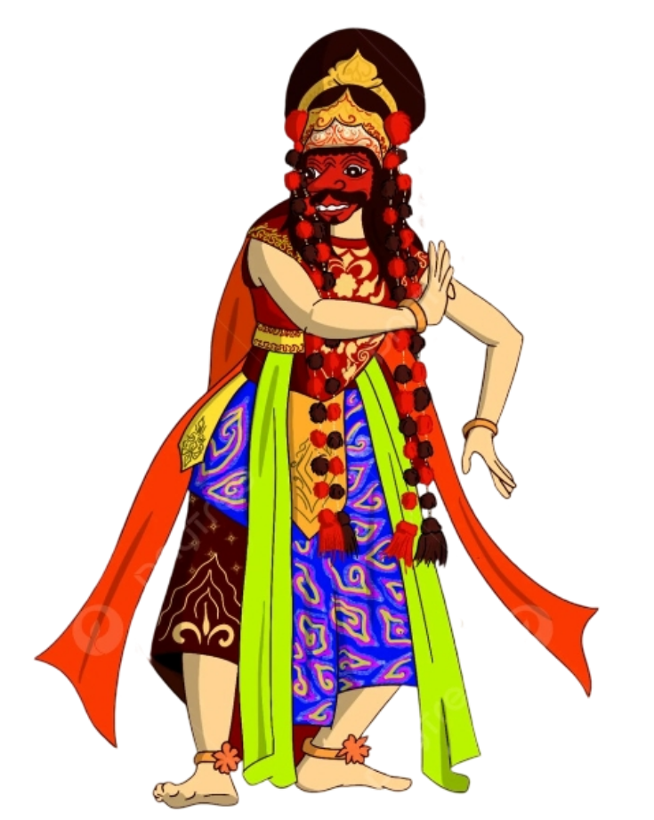
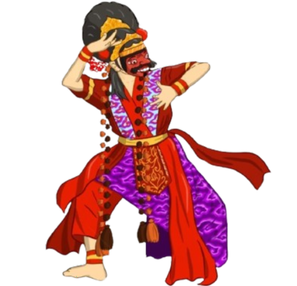
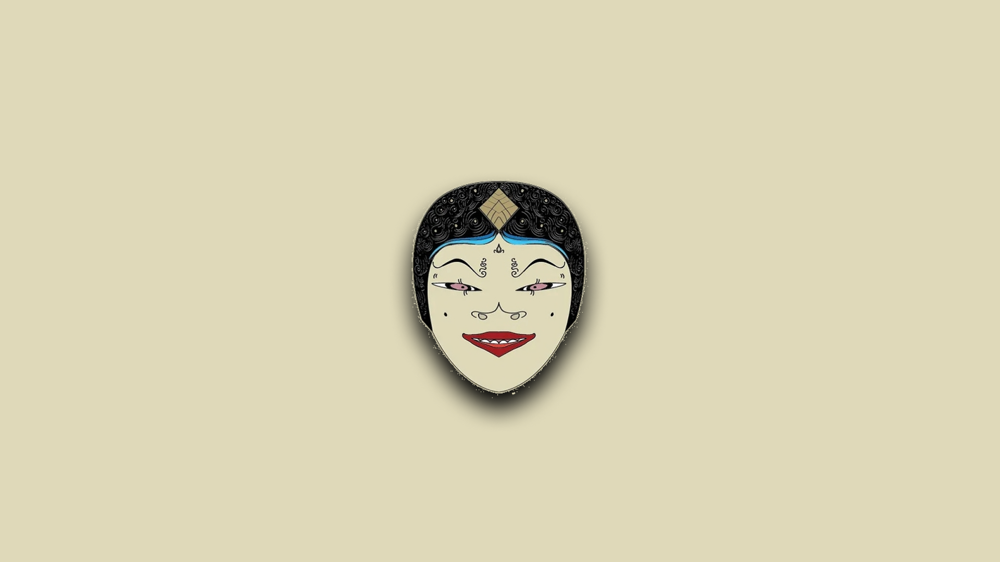
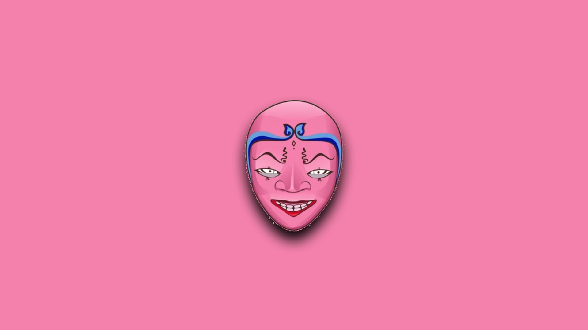
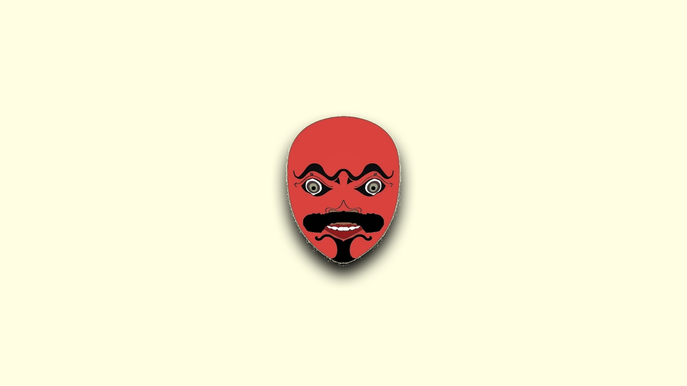

Kesenian Topeng Cirebon


Topeng Panji

Topeng Panji, wajahnya yang putih bersih melambangkan kesucian bayi yang baru lahir. Topeng berwarna Putih. Oleh karena itu, tarian ini ditampilkan dengan gerakan yang lembut layaknya anak-anak. Namun uniknya, gerakan yang banyak diamnya, statis, dan monoton itu sangat berlawanan dengan musiknya yang cepat dan keras. Meskipun demikian, tarian ini justru yang paling sukar ditarikan, karena diperlukan disiplin keras, penahanan diri, memakan tenaga, sangat serius, dan amat tertib sejak awal. Meskipun tarian ini merupakan tarian pertama, justru tarian ini dipelajari oleh para penarinya dalam tahap-tahap akhir, karena persyaratan tariannya yang demikian ketat.
Topeng Samba

Topeng Samba (Pamindo). Topeng Samba bukan sekadar karakter tari; ia adalah simbol kehidupan yang murni, fase awal manusia di mana hati masih jujur, pikiran belum rumit, dan gerak masih bebas. Dalam konteks pertunjukan, Samba menjadi pembuka suasana, menghadirkan tawa dan kegembiraan, serta mengundang penonton untuk masuk ke dalam dunia topeng yang sarat filosofi. Karakter Samba juga mengajarkan bahwa sebelum manusia memasuki masa dewasa yang penuh tanggung jawab dan godaan, ada fase penting yang membentuk dasar kepribadian — masa kanak-kanak. Maka dari itu, Topeng Samba bukan hanya hiburan, melainkan pengingat akan pentingnya menjaga semangat murni dan kegembiraan dalam hidup, meski usia terus bertambah. muda.
Topeng Samba
Topeng Samba (Pamindo). Topeng Samba bukan sekadar karakter tari; ia adalah simbol kehidupan yang murni, fase awal manusia di mana hati masih jujur, pikiran belum rumit, dan gerak masih bebas. Dalam konteks pertunjukan, Samba menjadi pembuka suasana, menghadirkan tawa dan kegembiraan, serta mengundang penonton untuk masuk ke dalam dunia topeng yang sarat filosofi. Karakter Samba juga mengajarkan bahwa sebelum manusia memasuki masa dewasa yang penuh tanggung jawab dan godaan, ada fase penting yang membentuk dasar kepribadian — masa kanak-kanak. Maka dari itu, Topeng Samba bukan hanya hiburan, melainkan pengingat akan pentingnya menjaga semangat murni dan kegembiraan dalam hidup, meski usia terus bertambah. muda.
Topeng Rumyang

Topeng Rumyang wajahnya menggambarkan seorang remaja. Topeng ini menggambarkan tenga seseorang yang telah memasuki dunia remaja. Penari yang menggunakan topeng ini akan membawakan sebuah gerakan yang mengandung pesan apabila semua manusia seharusnya berbuat kebaikan. Topeng berwarna Merah Muda. Tari Topeng Rumyang dikenal penuh dengan simbol yang memiliki pesan tentang nilai kepemimpinan, cinta dan kebijaksanaan serta filosofi yang juga menggambarkan aspek kehidupan yang sangat luas, mencakup kepribadian, cinta, angkara murka, kepemimpinan, serta perjalanan hidup manusia dari lahir hingga dewasa.

Topeng Rumyang
Topeng Rumyang wajahnya menggambarkan seorang remaja. Topeng ini menggambarkan tenga seseorang yang telah memasuki dunia remaja. Penari yang menggunakan topeng ini akan membawakan sebuah gerakan yang mengandung pesan apabila semua manusia seharusnya berbuat kebaikan. Topeng berwarna Merah Muda. Tari Topeng Rumyang dikenal penuh dengan simbol yang memiliki pesan tentang nilai kepemimpinan, cinta dan kebijaksanaan serta filosofi yang juga menggambarkan aspek kehidupan yang sangat luas, mencakup kepribadian, cinta, angkara murka, kepemimpinan, serta perjalanan hidup manusia dari lahir hingga dewasa.Topeng Tumenggung

Patih (Tumenggung), topeng ini menggambarkan orang dewasa yang berwajah tegas, berkepribadian, serta bertanggung jawab. Topeng berwarna Merah Kecoklatan/Coklat. Tarian ini menceritakan Tumenggung Magangdiraja yang diutus oleh Raja Bawarna untuk mencari Jinggananom yang kabur, setelah bertemu mereka beradu mulut hingga terjadi peperangan. Metode yang digunakan penulis adalah metode Gawe Jogedan yaitu memahami konsep musik dan pembendaharaan gerakan, menambah dan mengurangi/memadatkan ragam-ragam gerak, serta dengan mengolah irama.
Topeng Tumenggung
Patih (Tumenggung), topeng ini menggambarkan orang dewasa yang berwajah tegas, berkepribadian, serta bertanggung jawab. Topeng berwarna Merah Kecoklatan/Coklat. Tarian ini menceritakan Tumenggung Magangdiraja yang diutus oleh Raja Bawarna untuk mencari Jinggananom yang kabur, setelah bertemu mereka beradu mulut hingga terjadi peperangan. Metode yang digunakan penulis adalah metode Gawe Jogedan yaitu memahami konsep musik dan pembendaharaan gerakan, menambah dan mengurangi/memadatkan ragam-ragam gerak, serta dengan mengolah irama.
Topeng Kelana

Gerakan tarian yang mengiringi Topeng Kelana sangat dinamis, energik, dan penuh semangat. Penarinya bergerak dengan langkah-langkah yang gagah, kadang terkesan kasar, seperti orang yang sedang marah besar, mabuk kepayang, atau bahkan tertawa terbahak-bahak secara berlebihan. Setiap gerakannya memancarkan aura ketidakstabilan emosi dan gejolak batin. Musik pengiring yang khas untuk tarian ini adalah Gending Gonjing, yang iramanya cepat dan menggebu-gebu, sangat selaras dengan karakter tarian Topeng Kelana. Meskipun menggambarkan sisi negatif manusia, Topeng Kelana memiliki makna filosofis yang mendalam. Ia bukan hanya sekadar representasi kejahatan, melainkan juga sebuah peringatan dan pelajaran. Melalui karakter Kelana, penonton diajak untuk bercermin dan memahami pentingnya mengendalikan diri, hawa nafsu, serta emosi negatif agar dapat mencapai kebahagiaan dan kehidupan yang lebih baik.